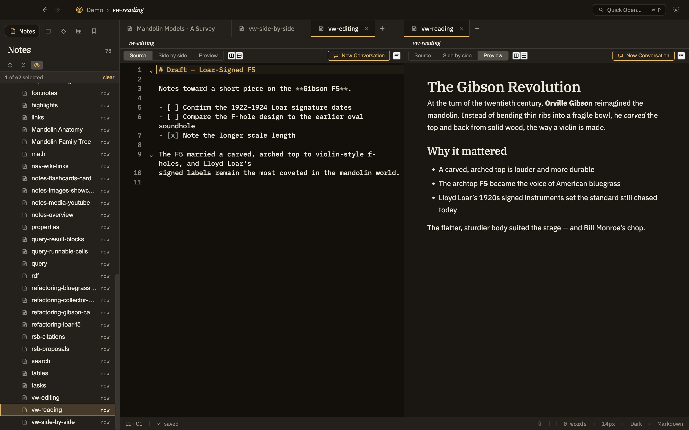

Docs/Viewing options/Split panes & windows
Split panes & windows
Sometimes you want to see two notes at once — a source next to the claim it supports, or an outline next to the section you're drafting. Minerva gives you two ways to do that: split the current window into side-by-side panes, each with its own tabs and view mode, or open a separate window.
Splitting into panes
A pane is a section of the window with its own tabs and its own view. You can split any pane into two, and split again from there, arranging your notes into as many side-by-side and stacked panes as you like. Drag the divider between two panes to resize them.
Moving notes between panes
With more than one pane open, you can move a tab from one to another in two ways:
A note can only be open in one pane at a time. If you try to open something that's already open elsewhere, Minerva simply brings that pane into focus.
Each pane keeps its own view
Each pane remembers its own view mode — Source, Preview, or Editor + Preview — so you can, for example, edit a note in one pane while reading its finished form in another. A new pane starts in the same mode as the one it split from, but you can change either one at any time.

Opening a new window
File → New Window (⌘⇧N) opens a fresh, empty Minerva window. You then open a thoughtbase into it, either the same one you already have open or a different one entirely. Changes you save in one window show up in the other automatically.
Split pane or new window?
Both let you see two things at once — here's how to choose: